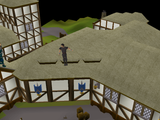
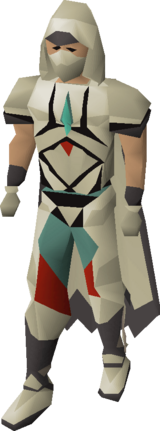
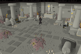
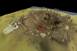
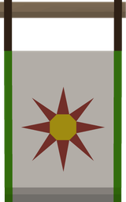
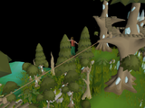
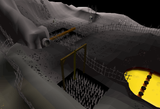
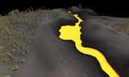
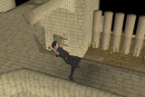
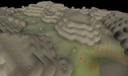

OSRS max time wasting plan
OSRS max time wasting plan
Gathering
Agility
71 for the quest cape block, 99 in the slow-skills block.
Your level
60of 71
XP 295,164To 71 519,281
Target71 → 99
Options7
Your pick
Open decision
No method locked in
The plan sets a target here but does not name a method. Pick one with the circle at the end of any row below.
Methods
At 60 Agility, the best option open to you is Hallowed Sepulchre (50–90k/hr). Locked rows need a higher level.
| Image | Method | Requirement | XP/hr | Notes | Choose |
|---|---|---|---|---|---|
 | Rooftop courses | 10–90 | 20–60k | Canifis 40, Seers' 60, Pollnivneach 70, Rellekka 80, Ardougne 90. Marks of grace fund  graceful. | |
 | Hallowed Sepulchrebest at your level | 52 | 50–90k | The main 99 route. XP scales with floors unlocked (62/72/82/92) and it's genuinely profitable. | |
 | Colossal Wyrm course | 50 (62 advanced) | 50–70k | The  Varlamore course. Pays in wyrm agility tickets for the Colossal Wyrm rewards. | |
 | Prifddinas rooftopneeds 75 Agility | 75 (+ Song of the Elves) | ~60k | Highest rooftop rate; also drops crystal shards. | |
 | Wilderness Agility Course | 47 | 45–60k | Faster than rooftops in its band and drops from the pile at the end, but you are in the  Wilderness. | |
 | Brimhaven Agility Arena | 1+ | 15–40k | Slow XP but tickets buy graceful/pet-adjacent rewards. Mostly skipped now. | |
 | Werewolf Skullball | — | low | Only useful for very early levels. |
Notes
- Your plan doesn't name a method. Rooftops to 52, then Hallowed Sepulchre the rest of the way, is the standard and pays for itself.
- Agility is one of the true slow skills. The plan correctly puts 99 late. Do the 71 requirement, then leave it.
- Get full graceful early; the run-energy restore compounds across every other skill you train.